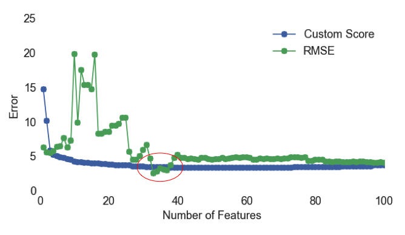

Why am I a data junkie? Because I'm excited about getting my hands on the vast reservoir of information that is waiting to be tapped. As scientists and engineers, we spend most of our time acquiring information through research and experimentation. Data science capitalizes on the opportunity to extract information from the mountains of data that have already been collected.
I've recently experienced this phenomenon in my work as a PhD candidate at the University of Colorado. My research group develops inexpensive air quality monitors using low-cost sensors, and lately, I've been exploring how machine learning can improve sensor performance. In a few short months, I have been able to significantly improve the regression models that we use to calibrate our sensors, and therefore greatly improve the accuracy of our measurements- all without spending any time improving instrument design or performing more experiments.
The ability of data science to exponentially accelerate the pace of research is very exciting, and can be applied to almost any field. I am eager to explore the hidden possibilities of data, and push the boundaries of understanding.
Personal Work - Regression Modeling for Sensor Calibration
I have always valued explanatory data visualization, but the importance of exploratory data visualization has become more apparent to me as I have worked on improving the regression models we use for sensor calibrations. Check out my ipython notebook on GitHub to see all of the visualizations I used to guide my regression modeling decisions.

The plot above is a comparison between the ozone values predicted by a linear regression model, using the data from the low-cost sensors, and the ozone values measured by a reference instrument. The root-mean-square error (RMSE) for this regression is 5 ppb, which means that there is a 5 ppb difference between the reference ozone concentration measurements and the model predictions. This RMSE is very good, especially when you consider the fact that we're comparing the performance of a $10 sensor to a $10,000+ reference instrument. However, when we look at this plot, we can see that at high ozone values, the model always underpredicts ozone (15% underprediction when concentration > 60 ppb and 20% underprediction when concentration > 70 ppb). Since exposure to high ozone concentrations can negatively impact health, researchers are most concerned about these high ozone values. Without plotting this data, one could conclude that this model is a great fit, but this plot instantly makes it clear that it does not work well at high values.

To reduce the model's underprediction at high values, I transformed the base features (ozone sensor signal, temperature and humidity) to create 321 new features. The plot above shows a linear regression with all 324 features. Adding the new features to the regression reduced the magnitude of the underprediction from at high values from 15% to 6% while maintaining a RMSE of 5.
It is always best to use the simplest model possible, so the next thing I did was select the most important features in the model. I used forward selection, and wrote an algorithm to choose each feature based on minimizing a custom error function. The custom function is a sum of the RMSE at high and low ozone values, with errors at high values weighted ten times as much as those at low values. The plot above shows how the custom error and RMSE change as each next-best feature is added to the regression. Based on the plot above, I would probably select between 9 and 15 features for my model, but I also looked at learning curves to evaluate when adding features starts to lead to overfitting.